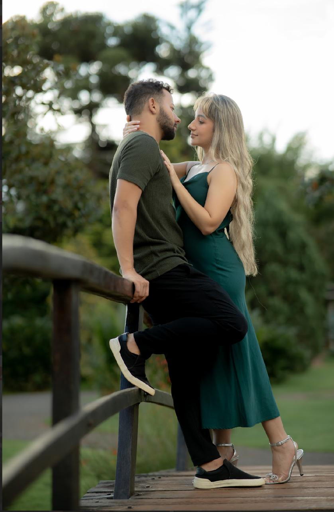

Cerimônia

“Aqui não é apenas uma festa. É a celebração de uma promessa diante de Deus, um sacramento abençoado e o início de uma nova história de amor. Chegue antes do horário e viva conosco cada instante desse momento tão especial.”
Traje
• Branco é exclusivo da noiva.
• Terno cinza claro será usado pelos padrinhos.
• Lilás será a cor das madrinhas.
• Para os convidados, o traje é esporte fino.